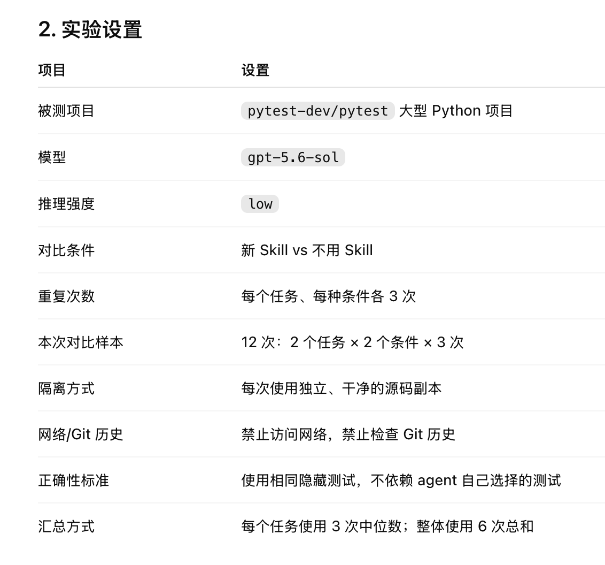
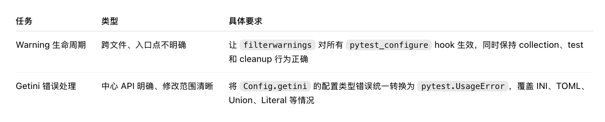
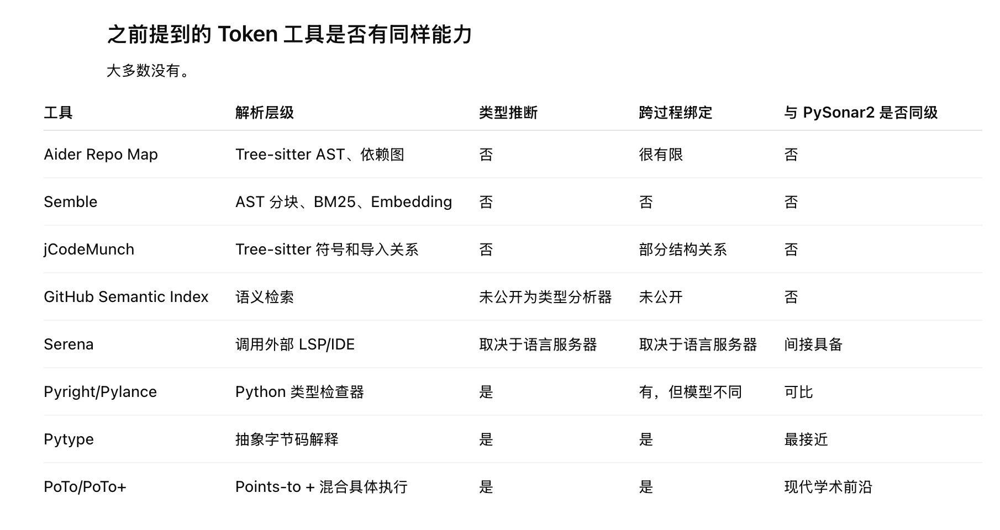
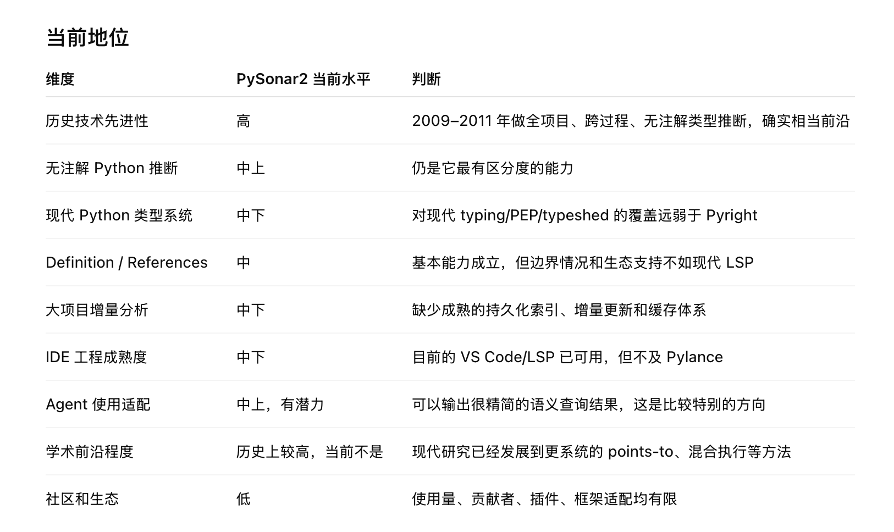

How PySonar2 Helps AI Save Tokens
Conclusion
Today I want to share a “major” discovery: PySonar2 can greatly reduce the tokens AI consumes when modifying Python projects.
This is the benchmark result produced by ChatGPT:

Here is the benchmark task definition:

There were two tasks:

In summary, the benchmark used a large Python project created for testing and defined tasks in two directions. One crossed multiple directories and files; the other had a clear target and required no cross-file definitions. Each was executed with and without the Skill.
As shown, using the Skill improved speed slightly and reduced token consumption directly by 30%!
Explanation
The Skill mentioned above is a Skill conforming to the AI Skills specification and wrapping the PySonar2 source. You can tell ChatGPT directly:
Install this skill in my user-level directory: https://github.com/smallyunet/pysonar2
That is enough.
This PySonar2 repository is a fork. The original was Yin Wang’s project from thirteen years ago and had become somewhat “outdated” in engineering and features, so I added a little modern engineering packaging. PySonar2’s core lexical analysis and type inference, of course, are not outdated.
Besides the AI Skill, I published PySonar2 as a VS Code extension. After installing it and opening Python code in VS Code, hovering over code displays PySonar2’s inferred types:
- Extension: PySonar2 Code Intelligence
Idea
Why can PySonar2 help AI save tokens?
If you are a programmer who frequently asks AI to write code, you will see it use rg extensively. For every task, it reads all kinds of source files before continuing with modifications. PySonar2 can provide semantic content derived from AST analysis:
{
"symbol": "User",
"definitions": [
{"file": "models.py", "startLine": 12}
],
"references": [
{"file": "service.py", "startLine": 48},
{"file": "tests/test_service.py", "startLine": 31}
],
"affectedFiles": [
"models.py",
"service.py",
"tests/test_service.py"
]
}
It summarizes where every variable is defined, where it comes from, and which source files relate to it, all in one file. It is equivalent to building a local index that AI reads directly instead of rereading all the code every time.
Every current AI tool has two limitations:
- AI usage consumes tokens, and tokens are money. Saving tokens saves money.
- Every Transformer-based AI model has a context limit. An index saves context space.
Comparison
Does PySonar2 still have any unique value today? Yes:

Many similar projects claiming to save tokens use keyword matching or even embedding matching, which is not on the same level as PySonar2’s semantic analysis.
Still, thirteen years have passed without academic-theory updates, so PySonar2 cannot remain at the world’s frontier. But because it is open source, lightweight, and logically clear, it may have unique advantages and potential for Agent integration:

Inspiration
1. Python Is Only the Beginning
If PySonar2 can save AI large amounts of tokens on Python projects, what about other languages? Could JavaScript use the same idea? What about more scripting languages? The idea is no longer limited to PySonar2 itself.
2. Helping AI Save Tokens
More than making this old project useful again, I care about another question: which coding tools remain valuable in the AI era?
Humans no longer need to write or even read code. Yet PySonar2 plays an enormous role here, saving AI tokens and giving me a different kind of hope:
- Helping AI save tokens is a good direction for tools.
(At the same time, I am optimizing another project, EchoEVM. Using EchoEVM’s interpreter foundation, AI writing Solidity scripts can see bytecode-level execution. Such a debugging tool is not useful to humans, but is extremely useful to AI: humans cannot understand bytecode, while AI can.)
- Fundamental principles do not become outdated in the AI era.
As a tool with academic-grade principles, PySonar2 still provides value today when humans no longer need to write code. It saves AI tokens and saves users money. That is an efficiency tool in the truest sense.
Related Reading
If you do not know PySonar2’s background, here are several related articles:
- PySonar’s Second User
- PySonar2 Is Open Source
- PySonar2 Integration with Sourcegraph Is Complete
- How PySonar Works
Update (2026.08.09)
One clarification: the original article’s claim of a 40% reduction in token consumption applies only to certain tasks involving extensive cross-file work, overlapping variable names, and unclear semantics. After broader testing, the latest benchmark results show that forcing the use of PySonar2 actually increases both token consumption and completion time for many general-purpose tasks. However, thanks to PySonar2’s precise semantic analysis, runs using it achieved 100% accuracy in the benchmark. At present, the clearest benefit PySonar2 offers AI is semantic-level factual evidence.
To further test whether building a semantic index first and then using that index while modifying code could improve efficiency and save tokens, I later created a separate project called code-engram. It currently focuses on TypeScript and also integrates PySonar2. Its only positive benchmark result so far is a 60% reduction in token consumption for rename tasks in large projects. For small projects and other general-purpose tasks, however, token consumption increases instead. This is similar to the results from the standalone PySonar2 repository, so code-engram remains an ongoing exploration as well…